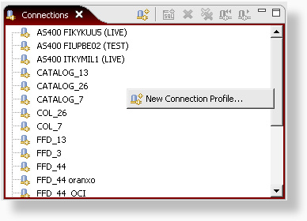
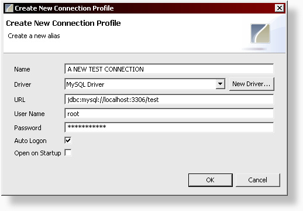
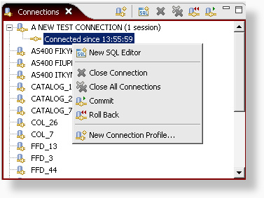

The Connections View shows you all the connection profiles that you have set up. This is where you can create new connection profiles, start new database connections or stop them. To create a new connection profile, right click in the view and select 'New Connection Profile' or use the action button with the same icon.

In the new connection dialog, add the name of the driver and correct the url. If you select the auto logon option, you'll also need to provide a username and password. If this is not provided, you'll need to enter the username and password every time you open a new connection.

After the connection profile has been created, we can open a new connection to the database by double clicking on the entry in the connections view. Right clicking the connection, shows the options to close, commit or rollback the connection. From here you can also create new SQL Editors for this connection. The action buttons can be used to do the same. Note that the commit and rollback buttons are only available if you have not selected the autocommit option in the SQL Explorer preferences page.
